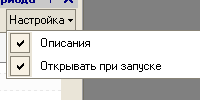

Панель функций
Назначение.
Предоставляет доступ пользователю к объектам конфигурации, альтернативно главному меню и панелям инструментов.
Работа с панелью функций.
|
|
Панель функций состоит из нескольких страниц, на каждой из которых расположены один или несколько пунктов. Название выводится в самом сверху страницы. На рисунке показан фрагмент страницы "Завершение периода".
Выбрать нужную страницу можно из выпадающего списка по кнопке .
По кнопке  откроется страница содержания со списком всех страниц. откроется страница содержания со списком всех страниц.
Кнопки  позволяют вернуть на шаг назад и пройти на шаг вперед по истории открытых пользователем страниц. позволяют вернуть на шаг назад и пройти на шаг вперед по истории открытых пользователем страниц.
При нахождении мыши над пунктом, он подчеркивается, при нажатии мышью на пункт открывается соответствующая форма (или выполняется действие). На рисунке показаны два пункта : "Закрытие месяца" и "Счета с особым порядком переоценки".
Под каждым пунктом выводится описание.
Пункты для улучшения восприятия организуются в разделы, которые выделены особым оформлением. На рисунке видно два раздела: "Документы" и "Регистры". |
Состав страниц определяется функциональными подсистемами ("Банк", "Касса", "Покупка", "Продажа") и схемами работы пользователя в конфигурации ("Завершение периода", "Начало работы").
Панель функций обеспечивает доступ не ко всем объектам конфигурации, а только к наиболее востребованным пользователем. При этом, одна и та же форма может открываться из разных страниц, например, форму списка контрагентов необходимо открывать и со страницы "Покупка" и со страницы "Продажа". В этом главное отличие панели функций от главного меню и панелей инструментов.
Настройка панели функций.
Для наиболее полного соответствия потребностям отдельной группы пользователей, панель функций позволяет подготовить несколько вариантов состава страниц/пунктов. Например, варианты "Основной" , пригодный всем пользователям, вариант "Кадры" для специалистов, выполняющих задачи по кадровому учету и вариант "Расчет" для расчетчиков зарплаты.

Требуемый пользователю вариант устанавливается в настройках пользователя в группе "Панель функций" в настройке "Вариант панели функций". Здесь же можно установить и другие настройки панели функций.
Непосредственно в саму панель функций выведено две наиболее часто изменяемые настройки:

При установленной настройке "Описания" панель под каждым пунктом панели функций приводится его описание. Такой режим особенно хорош при начальном освоении конфигурации. При сброшенной настройке "Описания" на странице выводятся только пункты и разделы, а описания не выводятся. Такой режим обычно используют уже опытные пользователи.
При установленной настройке "Открывать при запуске" панель функций начинает работу непосредственно при запуске конфигурации". При сброшенной установке для начала работы с панелью функций её необходимо вызвать подменю "Помощь" главного меню.